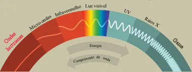

O que é uma onda de radio?
A onda de rádio é um tipo de onda eletromagnética, uma radiação. Existem sete tipos de ondas eletromagnéticas:
Onda de rádio
Micro-ondas
Infravermelho
Luz visível
Ultra-violeta
Raio-X
Raio Gama
